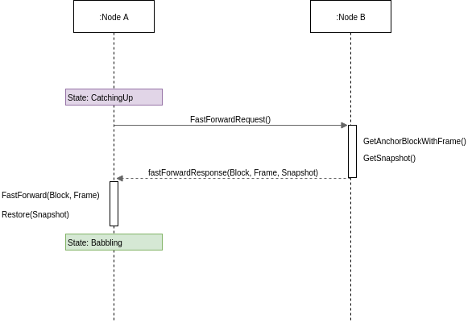
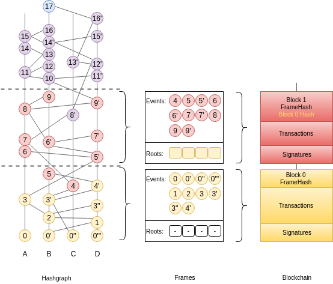
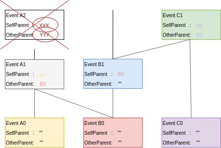

FastSync¶
FastSync is an element of the Babble protocol which enables nodes to catch up with other nodes without downloading and processing the entire history of gossip (Hashgraph + Blockchain). It is important in the context of mobile ad hoc networks where users dynamically create or join groups, and where limited computing resources call for periodic pruning of the underlying data store. The solution relies on linking snapshots of the application state to independent and self-contained sections of the Hashgraph, called Frames. A node that fell back too far may fast-forward straight to the latest snapshot, initialize a new Hashgraph from the corresponding Frame, and get up to speed with the other nodes without downloading and processing all the transactions it missed. Of course, the protocol maintains the BFT properties of the base algorithm by packaging relevant data in signed blocks; here again we see the benefits of using a blockchain mapping on top of Hashgraph. Although implementing the Snapshot/Restore functionality puts extra strain on the application developer, it remains entirely optional; FastSync can be activated or deactivated via configuration.
Overview¶
The Babble node is implemented as a state-machine where the possible states are: Babbling, CatchingUp, Joining, Leaving, and Shutdown. When a node is started and belongs to the current validator-set, it will either enter the Babbling state, or the CatchingUp state, depending on whether the fast-sync flag was passed to Babble.
In the CatchingUp state, a node determines the best node to fast-sync from (the node which has the longest hashgraph) and attempts to fast-forward to their last consensus snapshot, until the operation succeeds. Hence, FastSync introduces a new type of command in the communication protocol: FastForward.
Upon receiving a FastForwardRequest, a node must respond with the last consensus snapshot, as well as the corresponding Hashgraph section (the Frame) and Block. With this information, and having verified the Block signatures against the other items as well as the known validator set, the requesting node attempts to reset its Hashgraph from the Frame, and restore the application from the snapshot. The difficulty resides in defining what is meant by last consensus snapshot, and how to package enough information in the Frames as to form a base for a new/pruned Hashgraph.
Frames¶
Frames are self-contained sections of the Hashgraph. They are composed of FrameEvents which wrap regular Hashgraph Events along with precomputed values for Round, Witness, and LamportTimestamp. Usually, these values would be calculated by every node locally but since FrameEvents belong to Blocks, which eventually collect enough signatures (>1/3), they can be used directly. Basically, Frames form a valid foundation for a new Hashgraph, such that gossip-about-gossip routines are not discontinued, while earlier records of the gossip history are ignored.
type Frame struct {
Round int //RoundReceived
Peers []*peers.Peer
Roots map[string]*Root
Events []*FrameEvent //Events with RoundReceived = Round
PeerSets map[int][]*peers.Peer //[round] => Peers
}
A Frame corresponds to a Hashgraph consensus round. Indeed, the consensus algorithm commits Events in batches, which we map onto Frames, and finally onto a Blockchain. This is an evolution of the previously defined blockchain mapping. Block headers now contain a Frame hash. As we will see later, this is useful for security. The Events in a Frame are the Events of the corresponding batch, in consensus order.
Roots¶
Frames also contain Roots, with a certain number of past FrameEvents for each particpant. Intuitively, “replanting” a Hashgraph requires deep enough roots. The Hashgraph is an interlinked chain of Events, where each Event contains two references to anterior Events (SelfParent and OtherParent). Upon inserting an Event in the Hashgraph, we check that its references point to existing Events (Events that are already in the Hashgraph) and that at least the SelfParent reference is not empty. This is partially illustrated in the following picture where Event A2 cannot be inserted because its references are unknown.
If, when resetting from a Frame, we only used the Events associated with the corresponding round-received, we would quickly run into a situation where future Events reference unknown/older Events, and fail to be inserted. Hence, we need to package a “history” of past Events in the Frame, as a base layer for resetting the Hashgraph; this is contained in the Roots.
What matters is that every participant computes the same Roots, and that Roots contain sufficient information to keep inserting Events in a Reset hashgraph and compute a consensus order.
As of today, the number of FrameEvents in each Root (the root depth) is hard-coded to 10, to avoid nodes from using different values, which would result in different Blocks, and forks (partitions).
Note that there is still a possibility for an Event’s OtherParent to refer to an Event “below” the Frame. This is possible due to the asynchronous nature of the gossip routines, but is an unlikely scenario. The Frame design tries to find a compromise between the size and the amount of useful information they contain. A root depth of 10 offers a high-enough probability of success.
FastForward¶
Frames may be used to initialize or reset a Hashgraph to a clean state, with indexes, rounds, blocks, etc., corresponding to a capture of a live run, such that further Events may be inserted and processed independently of past Events. Hashgraph Frames are loosely analogous to IFrames in video encoding, which enable fast-forwarding to any point in the video.
To avoid being tricked into fast-forwarding to an invalid state, the protocol ties Frames to the corresponding Blockchain by including Frame hashes in affiliated Block headers. A FastForwardResponse includes a Block and a Frame, such that, upon receiving these objects, the requester may check the Frame hash against the Block header, and count the Block signatures against the known set of validators, before resetting the Hashgraph from the Frame.
Note the importance for the requester to be aware of the validator set of the Hashgraph it wishes to sync with; it is fundamental when it comes to verifying a Block. With a dynamic validator set, however, an additional mechanism will be necessary to securely track changes to the validator set.
Snapshot/Restore¶
It is one thing to catch-up with the Hashgraph and Blockchain, but nodes also need to catch-up with the application state. we extended the Proxy interface with methods to retrieve and restore snapshots.
type AppProxy interface {
SubmitCh() chan []byte
CommitBlock(block hashgraph.Block) (CommitResponse, error)
GetSnapshot(blockIndex int) ([]byte, error)
Restore(snapshot []byte) error
}
Since snapshots are raw byte arrays, it is up to the application layer to define what the snapshots represent, how they are encoded, and how they may be used to restore the application to a particular state. The GetSnapshot method takes a blockIndex parameter, which implies that the application should keep track of snapshots for every committed block. As the protocol evolves, we will likely link this to a FrameRate parameter to reduce the overhead on the application caused by the need to take all these snapshots.
So together with a Frame and the corresponding Block, a FastForward request comes with a snapshot of the application for the node to restore the application to the corresponding state. If the snapshot was incorrect, the node will immediately diverge from the main chain because it will obtain different state hashes upon committing new blocks.
Improvements and Further Work¶
The protocol is not entirely watertight yet; there are edge cases that could quickly lead to forks and diverging nodes.
1) Although it is unlikely, Events above the Frame that reference parents from “below” the Frame. These Events will fail to be inserted into the Hashgraph, and the node would stop making progress.
2) The snapshot is not directly linked to the Blockchain, only indirectly through resulting StateHashes.
Both these issues could be addressed with a general retry mechanism, whereby the FastForward method is made atomic by working on a temporary copy of the Hashgraph. If an error or a fork are detected, try to FastSync again from another Frame. This requires further work and design on fork detection and self-healing protocols.